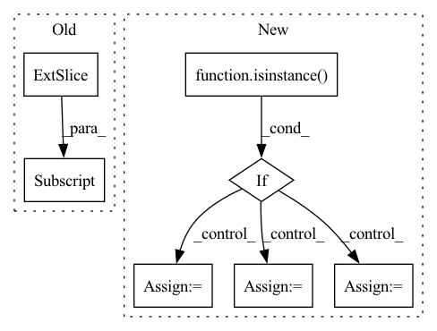

Pattern ID :22848
Before Change
if forecast.size(2) > 1: // multi-output
n_outputs = forecast.size(2)
forecast = [forecast[:, :, i] for i in range(n_outputs)]
backcast = [encoder_y[:, :, i] - backcast[:, :, i] for i in range(n_outputs)]
n_blocks = block_predictions.size(3)
block_predictions = [block_predictions[:, :, i] for i in range(n_outputs)]After Change
block_backcasts = block_backcasts.detach()
block_forecasts = block_forecasts.detach()
if isinstance( self.hparams.output_size, (tuple, list)) :
forecast = forecast.split(self.hparams.output_size, dim=2)
backcast = backcast.split(1, dim=2)
block_backcasts = tuple(
self.transform_output(block.squeeze(3).split(1, dim=2), target_scale=x["target_scale"])
for block in block_backcasts.split(1, dim=3)
)
block_forecasts = tuple(
self.transform_output(
block.squeeze(3).split(self.hparams.output_size, dim=2), target_scale=x["target_scale"]
)
for block in block_forecasts.split(1, dim=3)
)
else:
block_backcasts = tuple(
self.transform_output(block.squeeze(3), target_scale=x["target_scale"])
for block in block_backcasts.split(1, dim=3)
)
block_forecasts = tuple(
self.transform_output(block.squeeze(3), target_scale=x["target_scale"])
for block in block_forecasts.split(1, dim=3)
)In pattern: SUPERPATTERN
Frequency: 4
Non-data size: 7
Instances Fragment ID: 72638294
Project Name: jdb78/pytorch-forecasting
Commit Name: e7175c98af01f4c8f9aadb90c53aa4f0d1540931
Time: 2022-03-30
Author: beitner.jan@bcg.com
File Name: pytorch_forecasting/models/nhits/__init__.py
M Class Name: NHiTS
N Class Name: NHiTS
M Method Name: forward(2)
N Method Name: forward(2)
M Parent Class: BaseModelWithCovariates
N Parent Class: BaseModelWithCovariates
M File Name: pytorch_forecasting/models/nhits/__init__.py
N File Name: pytorch_forecasting/models/nhits/__init__.py
M Start Line: 261
M End Line: 290
N Start Line: 268
N End Line: 297
Before Change
features = tokenizer.encode(input_text, hypothesis, return_tensors="pt",
truncation_strategy="only_first")
logits = model(features)[0]
entail_contradiction_logits = logits[:, [0, 2]]
probs = entail_contradiction_logits.softmax(dim=1)
prob_label_is_true = probs[:, 1]
results[label] = prob_label_is_true.item()
After Change
else:
tokenizer = AutoTokenizer.from_pretrained(tokenizer_name)
if isinstance( input_text, list) :
// Must have a consistent amount of examples
assert(len(input_text) == len(labels))
// TODO: implement proper batching
results_list = []
for text, labels in zip(input_text, labels):
results = {}
for label in labels:
results[label] = calculate_probability(text, label)
results_list.append(results)
return results_list
else:
results = {}
for label in labels:
results[label] = calculate_probability(input_text, label)
return results
Fragment ID: 72638320
Project Name: kiri-ai/kiri
Commit Name: 7f0b95ef8169196944a99724b719f73413b4f159
Time: 2020-12-28
Author: ojasaarkristo@gmail.com
File Name: kiri/models/classification.py
M Class Name: AnonimousClass
N Class Name: AnonimousClass
M Method Name: zero_shot(5)
N Method Name: zero_shot(5)
M Parent Class:
N Parent Class:
M File Name: kiri/models/classification.py
N File Name: kiri/models/classification.py
M Start Line: 38
M End Line: 49
N Start Line: 49
N End Line: 69
Before Change
lengths = all_lengths + torch.rand((ray_num, point_num)).to(target_device) * resolution
// sampled coords is (col_id, col_id)
if output_samples:
ray_raw = torch.sum(torch.cat([sampled_coords / focal, -torch.ones(sampled_coords.shape[0], 1, dtype = torch.float32).to(target_device)], dim = -1).unsqueeze(-2) * cam_tf[:, :-1] , dim = -1)
pts = cam_tf[:, -1] + ray_raw[:, None, :] * lengths[:, :, None]
return torch.cat((pts, ray_raw.unsqueeze(-2).repeat(1, point_num, 1)), dim = -1), lengths, output_rgb, torch.cat((cam_tf[:, -1].unsqueeze(0).repeat(ray_raw.shape[0], 1), ray_raw), dim = -1)
ray_raw = torch.sum(torch.cat([(sampled_coords) / focal, -torch.ones(sampled_coords.shape[0], 1, dtype = torch.float32).to(target_device)], dim = -1).unsqueeze(-2) * cam_tf[:, :-1], dim = -1)After Change
indices = torch.randint(0, max_id, (ray_num,)).to(target_device)
output_rgb = rgbs[indices]
sampled_coords = coords[indices].to(torch.float32) + 0.5 // shift half pixel
if isinstance( focal, Iterable) :
sampled_coords[..., 0] /= focal[1]
sampled_coords[..., 1] /= focal[0]
else:
sampled_coords /= focal
// sampled coords is (col_id, col_id)
ray_raw = torch.sum(torch.cat([sampled_coords, -torch.ones(sampled_coords.shape[0], 1, dtype = torch.float32).to(target_device)], dim = -1).unsqueeze(-2) * cam_tf[:, :-1], dim = -1)
if output_samples: Fragment ID: 72638333
Project Name: enigmatisms/nerf
Commit Name: 6540170a567b47e4c9f65c604c10931ad96d9be5
Time: 2022-07-10
Author: 984041003@qq.com
File Name: py/utils.py
M Class Name: AnonimousClass
N Class Name: AnonimousClass
M Method Name: validSampler(9)
N Method Name: validSampler(11)
M Parent Class:
N Parent Class:
M File Name: py/utils.py
N File Name: py/utils.py
M Start Line: 69
M End Line: 85
N Start Line: 73
N End Line: 90